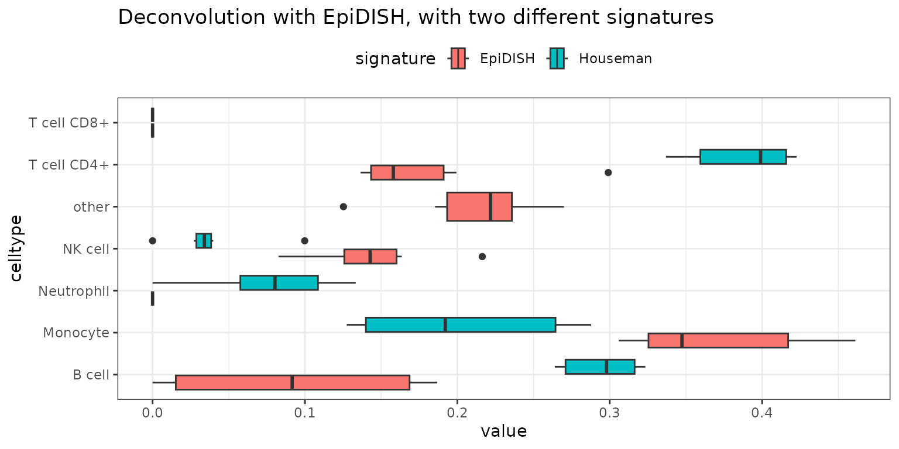

Signature Matrices and Cross-Signature Deconvolution in deconvMe
Source:vignettes/signatures.Rmd
signatures.RmdBackground: Reference-Based vs Reference-Free Deconvolution
Cell-type deconvolution methods can be broadly categorized into two main approaches:
Reference-Based Methods
Reference-based methods rely on signature matrices (also called reference matrices or basis matrices) to estimate the proportions of different cell types in a heterogeneous DNA methylation sample. A signature matrix is a table where each row corresponds to a CpG site (or region), and each column corresponds to a cell type. The entries represent the expected methylation value (often as beta values) for each CpG in each pure cell type. Signature matrices are typically constructed from reference datasets where DNA methylation has been measured in sorted or purified cell populations. The choice of CpGs and the quality of the reference data are critical for accurate deconvolution.
Reference-Free Methods
Reference-free methods attempt to deconvolve cell-type proportions without requiring prior knowledge of cell-type-specific methylation signatures. These methods use computational approaches such as non-negative matrix factorization (NMF) or independent component analysis (ICA) to identify latent cell-type components directly from the mixed methylation data.
Why deconvMe Focuses on Reference-Based Methods
deconvMe exclusively implements reference-based deconvolution methods because they generally provide better performance and more reliable results compared to reference-free approaches. Reference-based methods offer several advantages:
- Higher accuracy: Pre-defined signature matrices based on purified cell populations provide more reliable cell-type identification
- Better interpretability: Results can be directly mapped to known cell types with biological meaning
- Consistent results: The same signature matrix applied to different datasets produces comparable results
- Validation capability: Results can be validated against known cell-type proportions when available
Accessing Signature Matrices in deconvMe
library(deconvMe)
library(dplyr)
library(tidyr)
library(ggplot2)
options(matrixStats.useNames.NA = "deprecated")
# Load example data
library(minfiData)
methyl_set <- minfiData::MsetEx
beta_matrix <- minfi::getBeta(minfi::ratioConvert(methyl_set))All signature matrices follow a unified design - a
data.frame with a "CpGs" column and cell types
as additional columns:
# Get signature matrices
epidish_sig <- get_epidish_signature_matrix("blood")
houseman_sig <- get_houseman_signature_matrix()
methatlas_sig <- get_methatlas_signature_matrix()
methylresolver_sig <- get_methylresolver_signature_matrix()
# Check structure
cat("EpiDISH:", dim(epidish_sig), "\n")## EpiDISH: 333 8## Houseman: 450 7## MethAtlas: 6105 26## MethylResolver: 419 12Custom CpG Subsets
You can use custom CpG subsets for deconvolution:
# Get overlapping CpGs between methods
custom_cpgs <- intersect(epidish_sig$CpGs, houseman_sig$CpGs)
cat("Overlapping CpGs:", length(custom_cpgs), "\n")## Overlapping CpGs: 13
# Run with custom CpGs
result_custom <- run_epidish(beta_matrix, cpg_subset = custom_cpgs)Cross-Signature Deconvolution
deconvMe supports cross-signature deconvolution, allowing you to use signature matrices from one method with the deconvolution algorithm of another method.
Supported Methods
| Method | Cross-Signature Support |
|---|---|
| EpiDISH | ✅ All methods |
| MethAtlas | ✅ All methods |
| MethylResolver | ✅ All methods |
| Houseman | ❌ Not supported |
| MethylCC | ❌ Not supported (no classical signature matrix) |
Examples
# EpiDISH with Houseman signature
result_epidish_houseman <- run_epidish(beta_matrix, reference = houseman_sig)
# MethAtlas with EpiDISH signature
result_methatlas_epidish <- run_methatlas(beta_matrix, reference = epidish_sig)
# MethylResolver with MethAtlas signature
result_mr_methatlas <- run_methylresolver(
beta_matrix,
reference = methatlas_sig,
alpha = 1
)## Beginning LTS Deconvolution For This Mixture...
## | | | 0% | |============ | 17% | |======================= | 33% | |=================================== | 50% | |=============================================== | 67% | |========================================================== | 83% | |======================================================================| 100%
## Completed LTS Deconvolution For This Mixture...Comparing Results
# Compare EpiDISH with different signatures
result_epidish_blood <- run_epidish(beta_matrix, reference = "blood")$estF
result_epidish_houseman <- run_epidish(beta_matrix, reference = houseman_sig)$estF
# Rename cell types to unified names
colnames(result_epidish_blood) <- deconvMe::rename_cell_types(colnames(result_epidish_blood))
colnames(result_epidish_houseman) <- deconvMe::rename_cell_types(colnames(result_epidish_houseman))
result_epidish_blood_long <- result_epidish_blood |>
as.data.frame() |>
tibble::rownames_to_column('sample') |>
tidyr::pivot_longer(-sample, names_to = 'celltype') |>
dplyr::mutate('method'='EpiDISH')
result_epidish_houseman_long <- result_epidish_houseman |>
as.data.frame() |>
tibble::rownames_to_column('sample') |>
tidyr::pivot_longer(-sample, names_to = 'celltype') |>
dplyr::mutate('method'='Houseman')
results <- dplyr::bind_rows(result_epidish_blood_long, result_epidish_houseman_long)
deconvMe::results_aggregated_boxplot(results) +
ggplot2::labs(fill = "signature")+
ggtitle('Deconvolution with EpiDISH, with two different signatures')